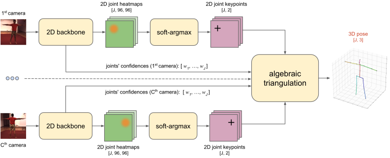
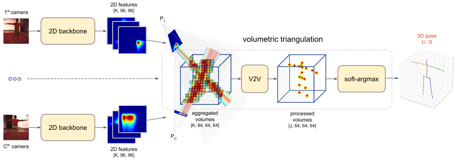
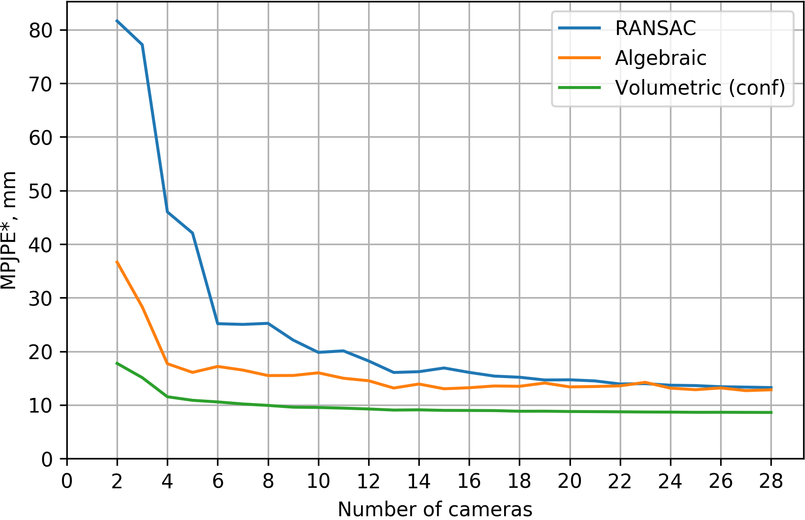

Abstract
We present two novel solutions for multi-view 3D human pose estimation based on new learnable triangulation methods that combine 3D information from multiple 2D views.
The first (baseline) solution is a basic differentiable algebraic triangulation with an addition of confidence weights estimated from the input images. The second, more complex, solution is based on volumetric aggregation of 2D feature maps from the 2D backbone followed by refinement via 3D convolutions that produce final 3D joint heatmaps.
Crucially, both of the approaches are end-to-end differentiable, which allows us to directly optimize the target metric. We demonstrate transferability of the solutions across datasets and considerably improve the multi-view state of the art on the Human3.6M dataset.
Models
Our approaches assumes we have synchronized video streams from cameras with known projection matrices capturing performance of a single person in the scene. We aim at estimating the global 3D positions of a fixed set of human joints with indices .
Algebraic
Our first approach is based on algebraic triangulation with learned confidences.

-
2D backbone produces the joints’ heatmaps and camera-joint confidences .
-
The 2D positions of the joints are inferred from 2D joint heatmaps by applying soft-argmax (with inverse temperature parameter ):
-
The 2D positions together with the confidences are passed to the algebraic triangulation module which solves triangulation problem in the form of system of weighted linear equations:
where - vector of confidences for joint , - matrix combined of 2D joint coordinates and camera parameters (see details in [1]) and - target 3D position of joint .
All blocks allow backpropagation of the gradients, so the model can be trained end-to-end.
Volumetric
Our second approach is based on volumetric triangulation.

-
The 2D backbone produces intermediate feature maps (note, that unlike the first model, feature maps doesn’t have to be interpretable).
-
Then feature maps are unprojected into a volume with a per-view aggregation (see animation below):
where - absolute coordinates of each voxel, - projection matrix of camera . Operation denotes bilinear sampling.
-
The volume is passed to a 3D convolutional neural network that outputs the interpretable 3D heatmaps .
-
The output 3D positions of the joints are inferred from 3D joint heatmaps by computing soft-argmax:
Volumetric model is also fully differentiable and can be trained end-to-end.
Unprojection
Here’s an animation showing how unprojection works for 2 cameras:
Results
We conduct experiments on two available large multi-view datasets with available ground-truth 3D pose annotations: Human3.6M [2] and CMU Panoptic [3].
Human3.6M
The Human3.6M [2] is currently one of the largest 3D human pose benchmarks with many reported results both for monocular and multi-view setups. The full dataset consist of 3.6 million frames from 4 synchronized 50 Hz digital cameras along with the 3D pose annotations (collected using a 10 separate IR-cameras marker-based MoCap system).
Here and further we report only summary of our results. Please refer to our paper for more details.
MPJPE relative to pelvis, mm:
| MPJPE (averaged across all actions) | |
|---|---|
| Tome et al. [4] | 52.8 |
| Kadkhodamohammadi & Padoy [5] | 49.1 |
| RANSAC (our implementation) | 27.4 |
| Ours algebraic | 22.6 |
| Ours volumetric | 20.8 |
MPJPE absolute, mm (filtered scenes with erroneous ground-truth 3D pose annotations):
| MPJPE (averaged across all actions) | |
|---|---|
| RANSAC (our implementation) | 22.8 |
| Ours algebraic | 19.2 |
| Ours volumetric | 17.7 |
MPJPE relative to pelvis, mm (monocular methods):
| MPJPE (averaged across all actions) | |
|---|---|
| Sun et al. [6] | 49.6 |
| Pavllo et al. [7] | 46.8 |
| Ours volumetric single view | 49.9 |
CMU Panoptic
The CMU Panoptic [3] is a new multi-camera dataset maintained by the Carnegie Mellon University. The dataset provides 30 Hz Full-HD videostreams of 40 subjects from up to 31 synchronized cameras.
MPJPE relative to pelvis, mm [4 cameras]:
| MPJPE (averaged across all actions) | |
|---|---|
| RANSAC (our implementation) | 39.5 |
| Ours algebraic | 21.3 |
| Ours volumetric | 13.7 |
Illustration of the difference in performance of the approaches on the CMU dataset validation (using 2 cameras) that demonstrates the robustness of the volumetric triangulation approach:
Estimate of the MPJPE absolute error on the subset of CMU validation versus the numbers of cameras (up to 28, treating the annotations from CMU as ground truth):

Transfer from Panoptic CMU to Human3.6M
We also conducted experiments to demonstrate that the learnt model is indeed generalizes to new setups. For that we applied a CMU-trained model to Human3.6M validation scenes. Below you can see example image (see video for more demonstrations):
BibTeX
TBA
References
- [1] R. Hartley and A. Zisserman. Multiple view geometry in computer vision.
- [2] C. Ionescu, D. Papava, V. Olaru, and C. Sminchisescu. Human3.6m: Large scale datasets and predictive methods for 3d human sensing in natural environments.
- [3] H. Joo, T. Simon, X. Li, H. Liu, L. Tan, L. Gui, S. Banerjee, T. S. Godisart, B. Nabbe, I. Matthews, T. Kanade,S. Nobuhara, and Y. Sheikh. Panoptic studio: A massively multiview system for social interaction capture.
- [4] D. Tome, M. Toso, L. Agapito, and C. Russell. Rethinking Pose in 3D: Multi-stage Refinement and Recovery for Markerless Motion Capture.
- [5] A. Kadkhodamohammadi and N. Padoy. A generalizable approach for multi-view 3D human pose regression.
- [6] X. Sun, B. Xiao, S. Liang, and Y. Wei. Integral human pose regression.
- [7] D. Pavllo, C. Feichtenhofer, D. Grangier, and M. Auli. 3d human pose estimation in video with temporal convolutions and semi-supervised training.